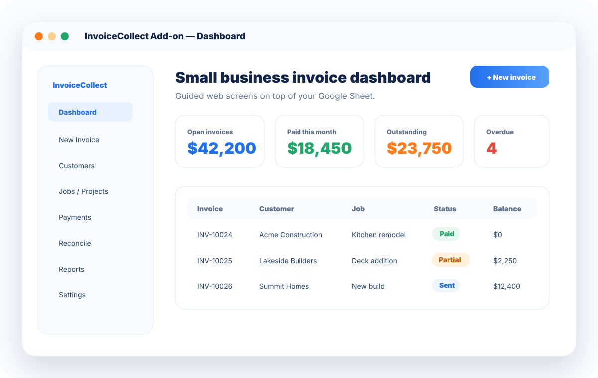
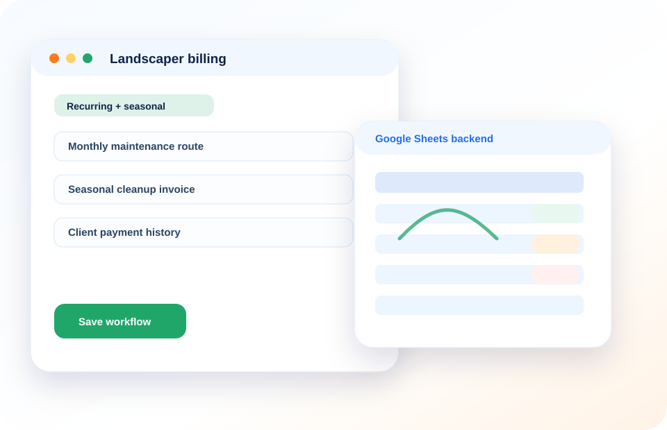
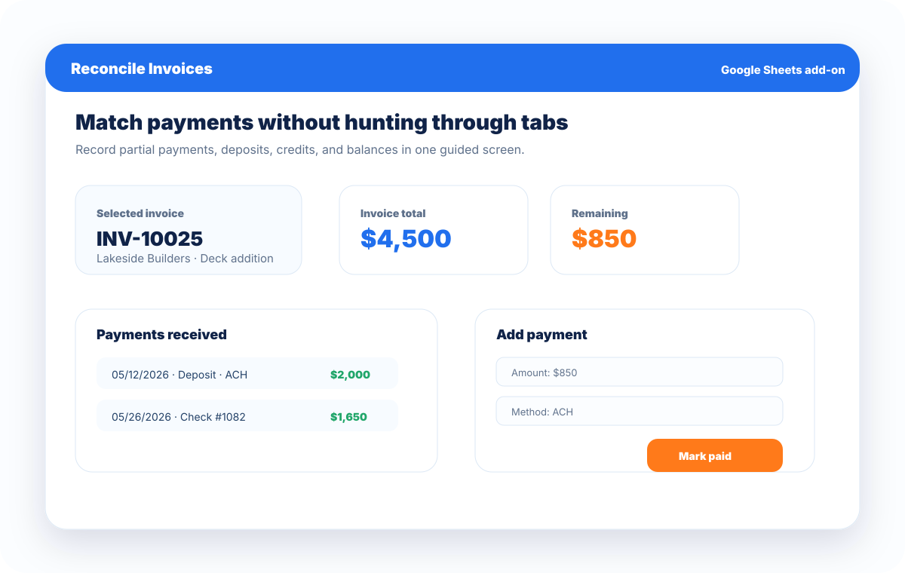
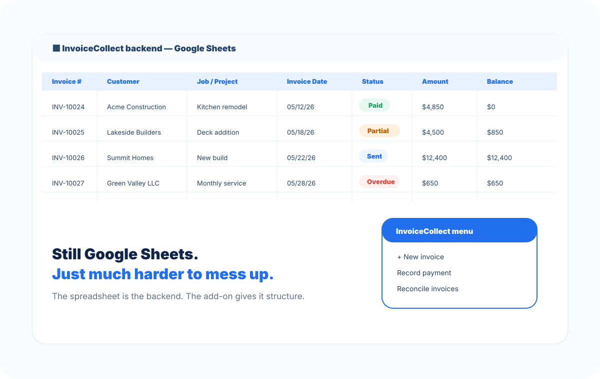

Operational dashboard
Track invoices, balances, partial payments, and reconciliation status.
A Google Sheets add-on for small businesses that want structured workflows without buying a big, bulky system.

InvoiceCollect keeps your data in Google Sheets while adding workflow structure on top: forms, ledgers, payment tracking, flexible payment schedules, and reconciliation.
As the platform grows, the web app layer will make the experience even smoother without losing the spreadsheet-native foundation. We also plan APIs to your favorite payment platforms so payment activity can sync more directly into your workflow.
Add recurring services, seasonal work, crews, routes, and client fields as the season changes.
That is the point of InvoiceCollect: keep the flexibility of spreadsheets, but make the daily workflow feel organized, guided, and calm.
InvoiceCollect combines guided web-style workflows with the flexibility of Google Sheets.

Track invoices, balances, partial payments, and reconciliation status.

Know what was paid, partially paid, outstanding, or overdue.

Built on Google Sheets so the system stays flexible and easy to adapt.